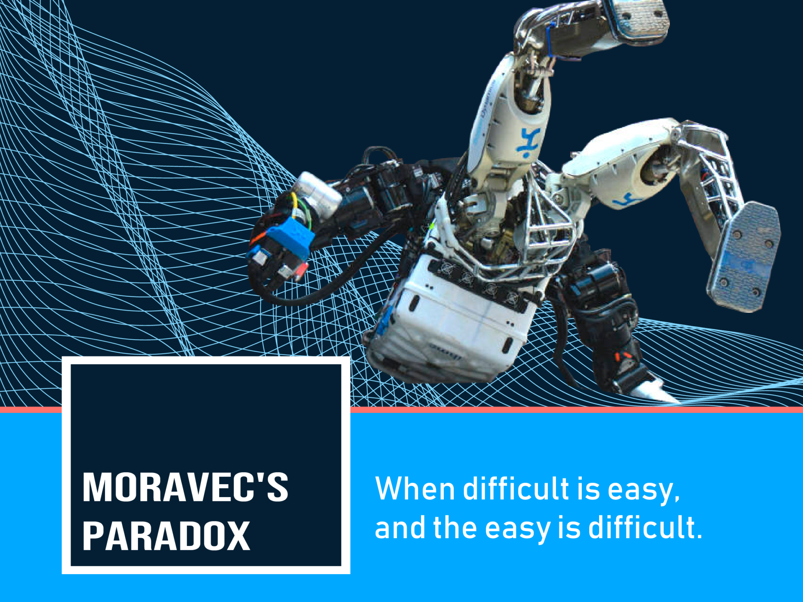

My Thoughts about AI
To be updated soon...

Mar 8, 2023 | Food of Thought |
ChatGPT, Geoffrey Hinton, Fundamental Structure, and Beyond
Since the release of ChatGPT in late 2022, discussions have once again been raised about whether AGI is achievable in our generation. Partly because the power of large language generative models...

Mar 1, 2023 | Technical Report |
A Summary of Autonomous Vehicle Companies
Although a field current under tremendous doubt and skepticism, autonomous vehicles still attracts a bunch of top machine learning researchers and engineers...

Mar 1, 2023 | Technical Report |
A Summary of Hot AI-generated Content (AIGC) Start-ups
Stable Diffusion, NovelAI, ChatGPT... What are the most promising AIGC start-ups to join in 2023?
Jan 1, 2023 | Technical Report |
Possible Applications of ChatGPT, and Their Bussiness Visions
April 5, 2022 | Food of Thought |
What are the Jobs Unlikely to be Replaced by AI?
Jan 1, 2022 | Food of Thought |
Vision and Challenges for a World with AGI

Sept 9, 2021 | Food of Thought |